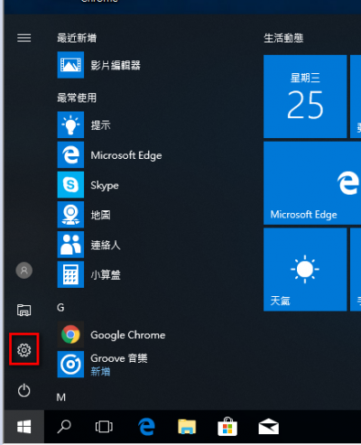
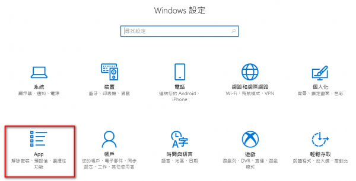
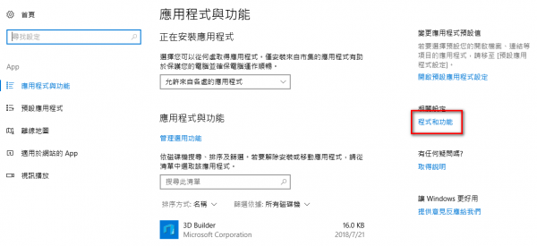
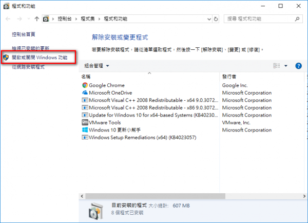
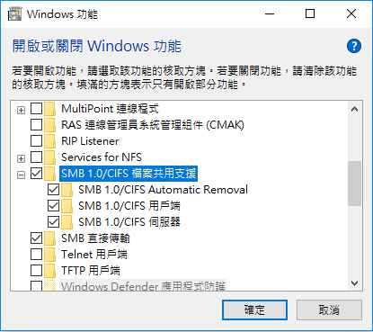

在 Windows XP或Windows 7 系統裡網路上的芳鄰的共用資料夾(SMB)服務是預設開啟的，有就是只要在檔案總管的網趾列，打上 「 \\xxx.xxx.xxx.xxx 」就可以連線到 xxx.xxx.xxx.xxx 這部電腦的網路磁碟，這在共用資料夾或是事務機掃描後自動傳到電腦內(部分事務機有此功能)是非常好用的，但當電腦換成win10後，卻發現無法正常使用，原因是Windows 10考量安全性問題，Windows 10 各版本作業系統中伺服器訊息區第1版 (SMBv1)網路通訊協定預設未安裝，可以用下列步驟開啟
window功能




